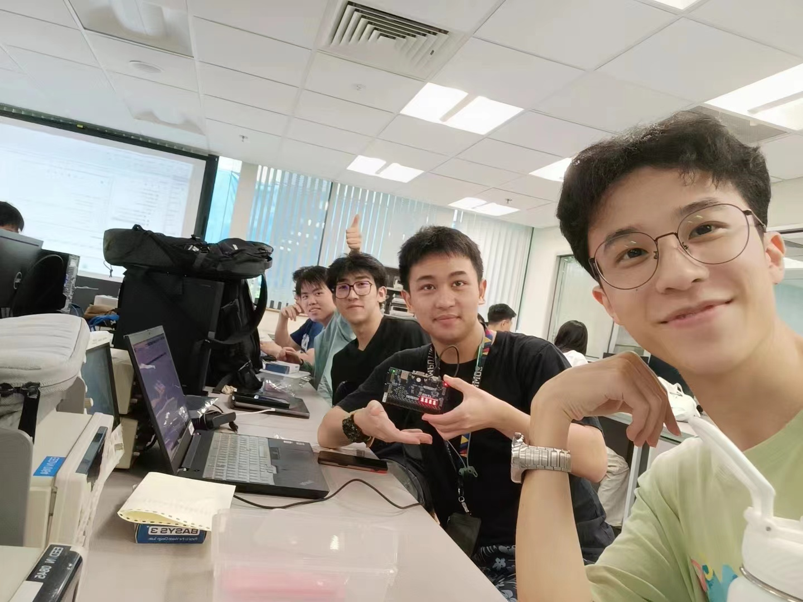
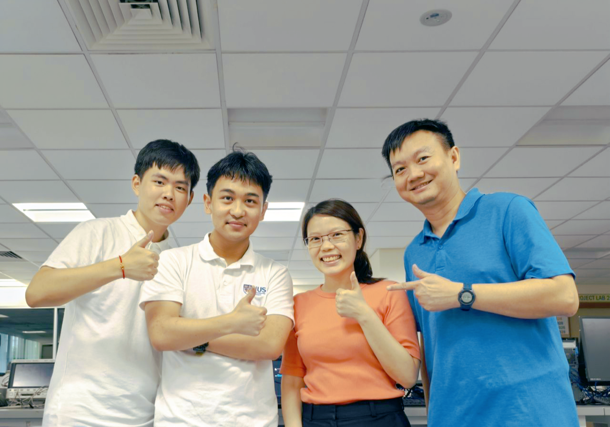

Congratulations on uncovering the story behind the Picture2Pixel Python Library project. This project was a collaborative effort between Guoyi and Sihan, both second-year undergraduates from the Department of Electrical and Computer Engineering at the National University of Singapore (NUS ECE). Guoyi and Sihan were introduced through Jiajun, and together with Siyi, the four of us formed a team in the EE2026 Digital Design course to develop a pixel art game for an FPGA-based PmodOLED screen. The thoughtful design of the EE2026 course and the undergraduate program in NUS ECE inspired us to extend our learning beyond the classroom, which ultimately led to the creation of the Picture2Pixel Python Library.
The four of us shared many memorable moments in Engineering Building 7 (E7) during our EE2026 journey. In the following GIF, captured by Jiajun, you can see us forming a human train on the smooth floor of E7, with Sihan as the engine, Guoyi as the first carriage, and Siyi bringing up the rear. Choo~ Choo~

A key component of our game development project in EE2026 was rendering pixel-style images using a PmodOLED RGB display. Siyi, through researching solutions from our seniors, discovered the potential of using the CV2 library for image pixelation. This led us to develop a Python script that batch converts images into pixels and 8-bit color values, assembling them into Verilog code. This script was the initial seed from which the Picture2Pixel Python Library grew.
At the final project presentation of EE2026, our distinctive pixel-style images and videos garnered high praise from the professors, inspiring us to further refine our project. We focused on optimizing the display logic and code structure to make it more accessible and beneficial for future students. After the course ended, Guoyi and Sihan shared our vision with Mr. Ho, the Digital Electronics Lab's administrator, expressing our desire for an OLED screen for further development and testing. On April 30, 2024, Mr. Ho presented our idea to Dr. Chua Dingjuan, the lead lecturer of EE2026. With Dr. Chua's support, the Picture2Pixel Python Library project officially commenced on May 2, 2024.

As summer break began, Jiajun returned to China for an internship at Tencent, while Siyi started his at AMD. Sihan and Guoyi stayed at NUS, enjoying a fulfilling summer. Between their internships and playing Minecraft together online, they completed the development and documentation of the Picture2Pixel Python Library. Finally, on May 25, the first version of the Picture2Pixel Python Library was officially released from Guoyi's dorm room.

During a reflection session with Dr. Chua, Guoyi and Sihan realized that their collaboration was not only a result of staying at NUS during the holidays but also because they were both single. At that time, Sihan was trying to recover from a breakup, while Guoyi, after attempting to socialize, found that his efforts did not always bring the expected returns. Confronted with these circumstances, these two young men chose self-improvement and held onto the belief that the right person would come along in their future. Thus, they decided to wait patiently for fate to unfold.
With a firm belief that those destined to meet will eventually cross paths, Guoyi created a promotional poster for the Picture2Pixel Python Library project in early June 2024.

This poster is now displayed in the exhibition showcase of the Digital Electronics Lab. Below the poster is a pop survey: Is the ending of this comic a happy ending or a sad one? We are currently gathering thoughts and won't reveal the answer just yet. You are welcome to visit E4-03-06 to cast your opinion!
Everyone's interpretation varies, and even the same person might feel differently at different times. Before starting the first stroke, Guoyi tried to convince himself that one day, a girl he truly admired would stand by his side. So, he drew himself first and then, on another layer, tried to sketch the girl who resonated with his soul. Thus, the female protagonist in the poster had no specific prototype before the final draft.
A month after the poster's release, a brave girl traveled a long, long way to step into Guoyi's universe. From that moment, the two layers began to merge, and parallel universes started to converge...
Guoyi won't tell you whether this story has a happy or sad ending. All he knows is that, in the parallel universes where he and she exist, a magnificent story is unfolding with their lives as its prologue, a tale they will write together.
Thank you for reading this far, dear friend. We hope that Picture2Pixel not only adds a touch of fun to your FPGA learning but also brings joy to your life. If, like us once, you are yearning for a friend who resonates with your soul, feel free to share this poster with them and discuss your thoughts together. Friends who are destined to meet will eventually find each other; what we perceive as chance is often fate in disguise. May Picture2Pixel help converge the parallel universes of kindred spirits, and may love give everyone the courage to embrace it.

Best regards,
Picture2Pixel Project Team
Sponsored by Digital Electronics Lab, National University of Singapore